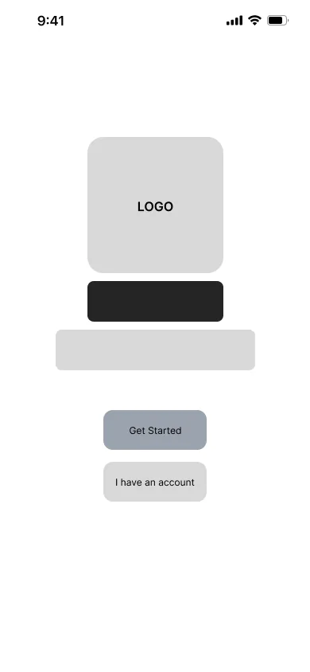
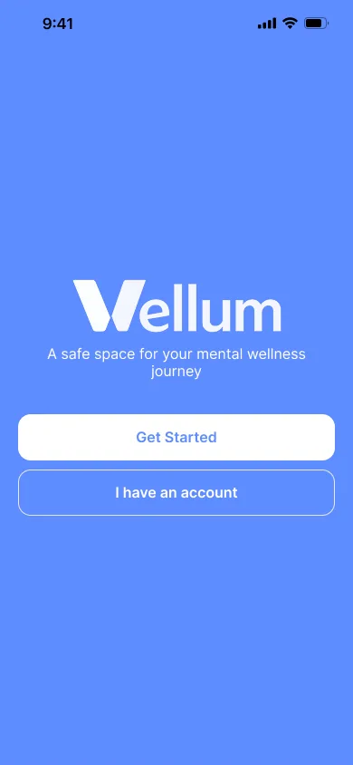
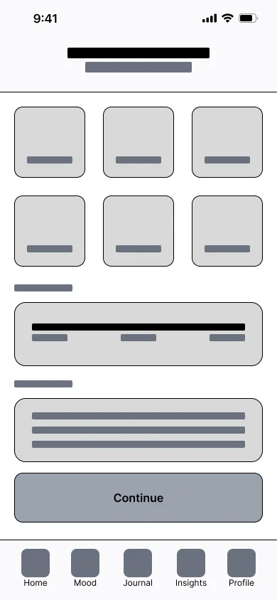
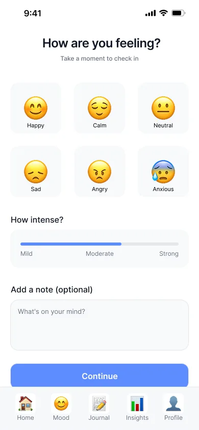
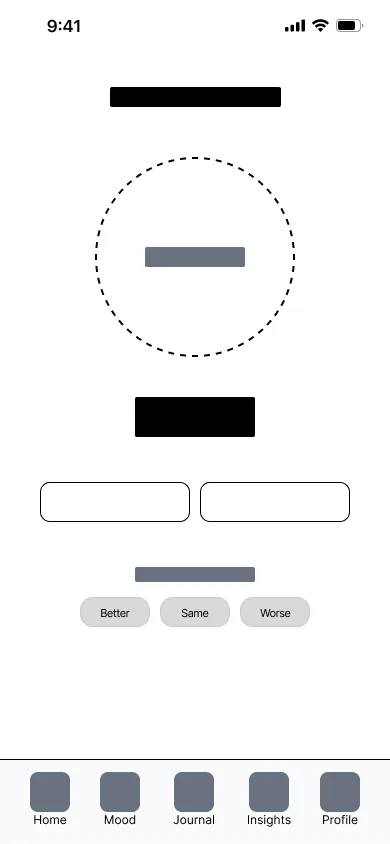
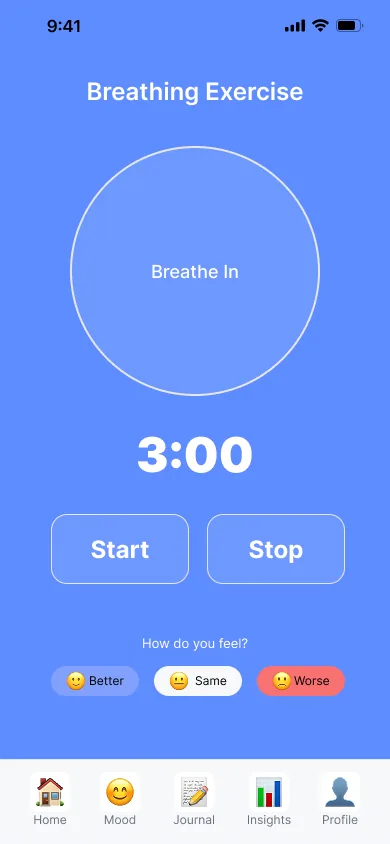
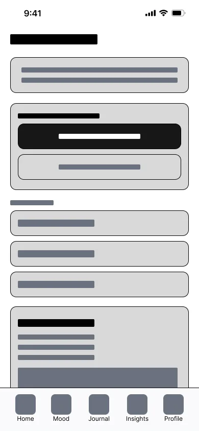
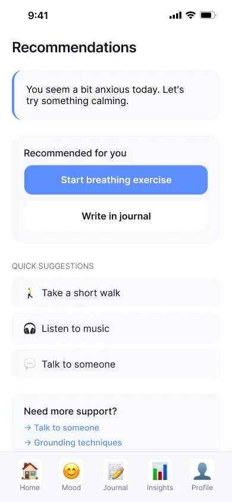
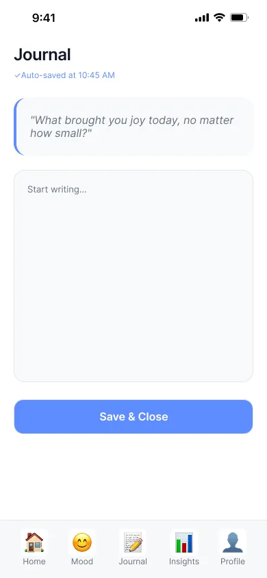
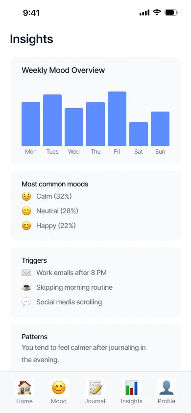

Vellum — Mindful Mobile UX/UI
& Ambient Reflection Concept
A calm, low-effort mobile journaling concept designed in Figma: no push nagging, no streak counters, and short, gentle reflection prompts instead.
Most wellness and journaling apps borrow tricks from mobile games: daily push reminders, streak counters and badges. My assumption, which the prototype is built to test, is that for people who are already stressed, missing one day can feel like failing, and that this makes them quit.
Designed a calm journaling companion in Figma: a one-swipe mood check-in, guided breathing, and free writing, with no streaks, no red badges, and a muted palette that is easy on the eyes at night.
# Vellum interaction principles, as designed (a Figma + Protopie prototype) [INPUT] Single-thumb swipe to pick a mood [INTERACTIONS] Three levels, each asking less of the user: ├─ Level 1: Mood check-in (no typing) ├─ Level 2: Guided breathing (visual pacing) └─ Level 3: Free writing on a plain page [HEURISTICS] No streak counters · no red badges [PROTOTYPE] Figma + Protopie, Published to the Figma Community
The Paradox of Gamified Wellness
Most modern wellness and journaling apps borrow heavily from addictive mobile gaming mechanics: aggressive daily push notifications, punitive “streak counters,” vibrant badge unlocks, and noisy data dashboards. For users already struggling with anxiety or burnout, these mechanics paradoxically introduce performance pressure and shame whenever a day is missed.
Vellum was conceived to test a contrary hypothesis: by removing gamified streaks and replacing them with ambient breathing exercises, open-ended micro-journaling, and sensory micro-interactions, daily reflection becomes an intrinsically rewarding refuge rather than another item on a to-do list.
Addressing Cognitive Friction in Journaling
I did not run user interviews for Vellum. The design starts from three friction points I took from reviewing common journaling apps; they are assumptions the prototype is built to test, not research findings:
1. The “Blank Page” Paralysis
An empty text area asks people to decide what to write before they have started, which makes it easy to close the app instead.
2. Streak Guilt & Burnout
A streak counter turns one missed day into a visible failure, which can push people to quit rather than come back.
3. Visual Over-stimulation
Bright gradients and saturated colours are harsh on the eyes late at night, when a reflection app is likely to be opened.
From Low-Fidelity Logic to Refined Polarity
Each core flow was mapped in wireframe form to test hierarchy before introducing typography, tactile shadows, and color temperature.








Tactile Calm: Warm Tones & Fluid Typography
Vellum utilizes a muted stone palette, generous touch targets (minimum 48px), and gentle spring transitions. Check-ins are achieved with a single thumb swipe, and reflection prompts provide intelligent micro-suggestions based on current mood state.


What the Design Delivers
Vellum is published to the Figma Community with its full component library, so the typography, the low-pressure flow and the components can be inspected directly.
What I would test next: whether removing streaks and badges keeps people coming back as well as game-style loops do. That is the design's central bet, and it is untested.